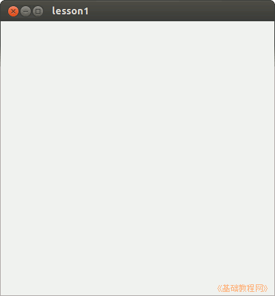

2014-2015 第一学期九年级程序设计教学设计
作者：TeliuTe 来源：基础教程网
一、认识程序设计 返回目录 下一课
（一）教学设计
1、学习目标：
2、注意事项：绕过弯来，既不要跳也不要落，一楼过了二楼
3、教学过程：
1）教师准备学案和板书；
2）学生整队进入，开机抄黑板上笔记；
3）教师讲解板书演示操作；
4）学生打指法、日志、完成操作；
5）教师打勾记录学生指法成绩，检查日志和操作；
注：学生抄完笔记就开始打指法、日志，老师讲完后再继续完成；
（二）板书设计(学生笔记)
教学9-1 2014年09月01日 星期一 15:58
01认识程序设计
1.编程语言有c，bas等
2.在主文件夹新建9-3，lesson1
3.点“主按钮，gambas”，添加图标
4.新建工程，下一步，文件夹，名称，确定。
01认识程序设计
1.编程语言有c，bas等
2.在主文件夹新建9-3，lesson1
3.点“主按钮，gambas”，添加图标
4.新建工程，下一步，文件夹，名称，确定。
操作图示：

（三）课后记
--
升级了搜狗拼音，输入法切换上出了问题，只能用键盘来切换，还要按多次才行
7、8年级的还要学习下才行，不会的让跟着会的学一学
--
整体上不难，除了打字上出了些问题，要不了两下就做出来了
把意思也多讲一讲，编程的意义，高中要学，培养逻辑思维
--
第一课打基础，盖房子一样打地基，做一个空的窗口
以后慢慢往里面添加内容，讲多少学生就会多少，剩下时间并不知道该做什么
--
做完了就想回去做作业，要求多挖掘一下深度
把双击英文fmain的讲一下，这样后面学生也就知道该怎么做了
--
该学电脑的时候就学电脑，别打着语文数学英语的旗号
这个时间就是学电脑的，别偷懒找其他原因，还要多练练口舌
--
根据学生的情况可以适当拓展一下，比如看看窗口之类的
提前把下节课的预习一下，在里面看看各个组成部分，东西少了怎么找回来
--
可以把窗口标题、背景色改一下，这样适当增加点难度
现在的学生已经不是几年前那样很少接触电脑的时候，接受练习的速度很快
返回目录 下一课
本教程由86团学校TeliuTe制作|著作权所有
基础教程网：http://teliute.org/
美丽的校园……
转载和引用本站内容，请保留作者和本站链接。